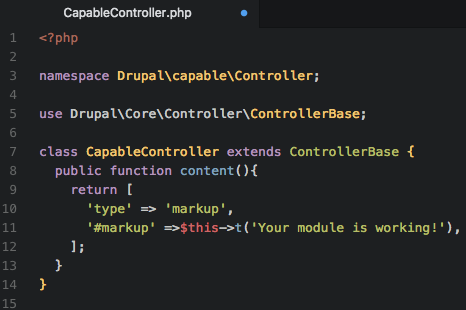

Drupal 8 Custom Module Architecture
What’s Going On?
Lindsay Gaudinier at Hook 42
About me
- Developer at Hook 42
- Swimming, cats, and the internet

The Thought Behind the Talk
I had to create a custom module for the first time, and I had only modified code in the past

I didn't want to just know how to make a custom module, I wanted to know the answers to all my why questions
Quick note: sometimes words are mentioned before they are defined. Please have patience.
We can't just start with the list of files
Nothing is ever that easy.

PSR-4: Improved Autoloading
- PSR stands for PHP Standard Recommendation
- PSR is a PHP specification that is published by the PHP Framework Interop Group (php-fig) who's focus is to move "PHP foward through collaboration and standards"
- Drupal 8 implements the PSR-4 standard for namespaces and autoloading
- PSR-4: "Autoloaders remove the complexity of including files by mapping namespaces to file system paths."

Autoloading
- Autoloading is capability of loading and linking portions of a program automatically when needed. The autoloader searches through a path of directories and finds the code that defines the subroutine (method/function).
- Autoloading means your code does not need to include a long list of source files in your php file
- The magic of autoloading works because of namespacing
Namespacing
- "Namespaces are commonly structured as hierarchies to allow reuse of names in different contexts." - Wikipedia
- Namespacing helps you avoid name collisions if you repeat the name for a function/class that was declared before
- Eliminates need for super long class names, points to where in the code you can find the function source
Namespacing: Code Examples
https://www.php-fig.org/psr/psr-4/Symfony
- Symfony is a PHP framework and a set of reuasable PHP components and libraries
- Defined as a MVC (Model, View, and Controller) framework
- Components are standalone PHP libraries that generate specific features
Some Symfony Components
- ClassLoader: provides tools to autoload classes and cache their locations for performance
- Console: helps you create command line interfaces
- CssSelector: converts CSS selectors to XPath (XML Path language) expression
- DependencyInjection: lets you standardize and centralize the way objects are constructed
- EventDispatcher: lets components communicate with each other
- HttpFoundation: defined an object-oriented layer for the HTTP specification
- HttpKernel: converts a HTTP Request into a HTTP Respose by using a EventDispatcher component
- Process: executes commands in subprocesses, creates APi for shell executions https://symfony.com/doc/current/components/process.html
- Routing: maps an HTTP request to a set of configurable variables
- Serializer: turn objects into specific formats (YAML) and specific formats into objects
- Translation: provides tools for internationalization
- Validator: validates following JSR 303: Bean Validation
- Yaml: parses YAML strings to conver them to PHP arrays, and vice versa
Why are you telling me this?
- Autoloading and namespacing play an important role in how and why we structure files and code in a module
- While Drupal 8 does NOT use the Symfony framework, D8 uses some Symfony components: ClassLoader, DependencyInjection, EventDispatcher, HTTPFoundation, HTTPKernel, Routing, Serializer, Validator, YAML
Types of files:
- YAML (YAML Ain't Markup Language): .yml, .yaml
- PHP: Hypertext Preprocessor: .php
- Markdown: .md
- Javascript Object Notation (JSON): .json
- Module: .module
- inc: Included file, is not a stand alone file [this needs more clarification]
- Javascript: .js
- CSS (Cascading Style Sheets): .css
Naming the module
- Start with a letter
- Contain only lower-case letters and underscores
- No spaces
- Unique name
- Does not contain any reserved words: src, lib, vendor, assets, css, files, images, js, misc, templates, includes, fixtures, Drupal
The Module Skeleton

Capable Module
modules /contrib /custom /capable .estlintrc README.md STANDARDS.md TESTING.md capable.api.php capable.data.inc capable.info.yml capable.libraries.yml capable.links.menu.yml capable.module capable.permissions.yml capable.routing.yml capable.services.yml capable.task.yml composer.json /config /install capable.settings.yml /schema capable.schema.yml /css main.css drupalci.yml /js main.js /src /Controller CapableController.php /Entity Robot.php /Form SignUpForm.php (might need to fix this) /Plugin [need to find an example plugin] /templates homepage.html.twig /tests
capable.info.yml
- The info.yml file lives in your root folder and tells Drupal about your module
- The info.yml file information can be found on the Drupal admin pages (/admin/modules)
- Technically, the only required file in your module (although the module won't do anything)

What's going on?

capable.info.yml complete example

-
depedencies:
- List the other module(s) that your module depends on to work.
- Namespacing: {project}:{module}
- {project} is the name as it appears in the Drupal.org url (https://www.drupal.org/project/token)
- {module} is the module machine name (token)
- Can also include version restrictions: token:token (8.x-1.3)
-
test_dependencies:
- List the module(s) you need to run automated tests
- Same namespacing as dependecies: {project}:{module}
-
configure:
- Specify the route to a configuration form
- This will show on the /admin/modules pages when you expand [this needs different words or an image]
-
php:
- Defines the minimum PHP verison that your module requires
- Can't enable the module if your PHP version is older
-
hidden:
- hidden: true, will hide your your module on the /admin/modules page
- Why would you hide your module? Perhaps it only implements tests and you don't want it disabled
The Controller File
- Following PSR-4, the controller file will live inside a folder called src, and then in a folder called Controller
- src stands for source
- Need to declare a namespace at the top.
- Namespace format: Drupal\[module name]\Controller;
- The controller file will work with the router file

CapableController.php
-
namespace Drupal\capable\Controller: declaring the namespace for the capable Controller class
- this must be done before any other code (except a declare statement) -
use Drupal\Core\Controller\ControllerBase: importing (aliasing) the Drupal core ControllerBase, which is being extended by CapableController class.
- Do not include a leading \
- Only specify one class per use statement.
- No clear rule to order for multiple use statements.
- Final use statement should habe a blank line underneath it. - class CapableController extends ControllerBase: creation of CapableController class that extends Drupal's core ControllerBase class
- public function content(): take note of the name of the function, this will come back in the routing file
The Routing File
- A route is a path where Drupal returns some sort of content
- The routing system is responsible for matching paths to controllers.
- Parameters are used for URLs that may contain dynamic values.
/hello/{node} would work for both /hello/123 and /hello/98

capable.routing.yml
Routing + Controller Working Together


capable.routing.yml complete example
capable.module
apparently this is a optional file?http://befused.com/drupal/first-drupal8-module
Introduction to Hooks
composer.json
Forms
Config
settings.ymlschema.yml
Permissions
Libraries
Services
Module Themeing
Javascript
CSS
Twig Templates
Tests
All The Sources

Namespaces
General
- https://www.drupal.org/docs/8/creating-custom-modules/a-practical-guide-to-building-basic-drupal-8-modules
Symfony
Example Modules:
- http://cgit.drupalcode.org/examples/tree/?h=8.x-1.x